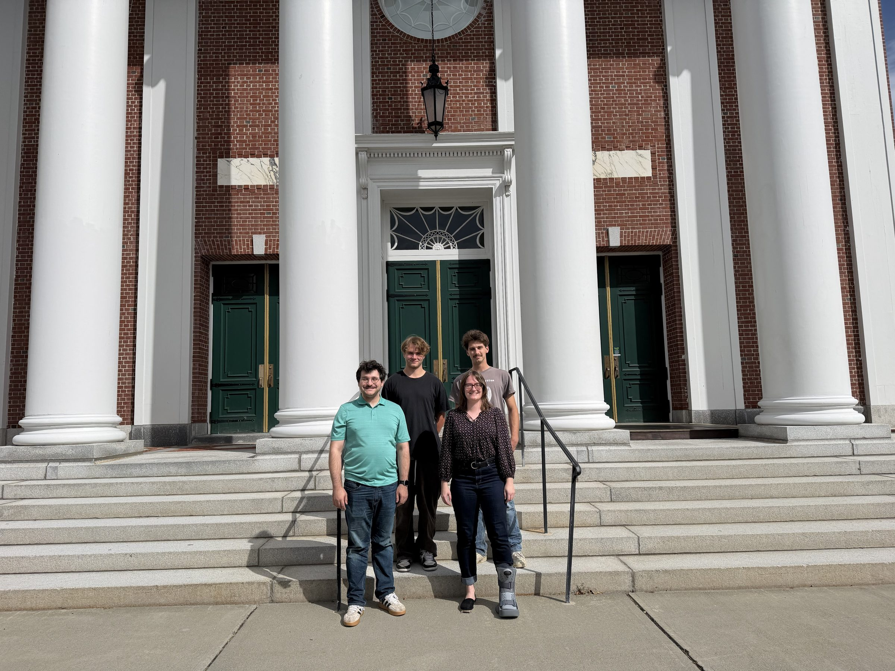
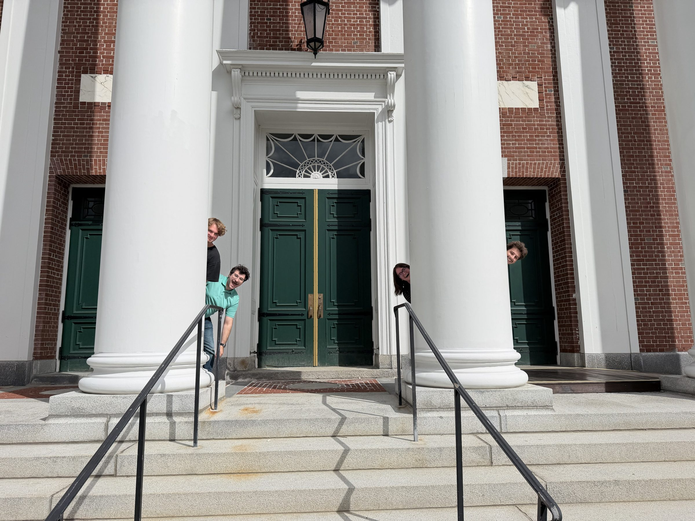
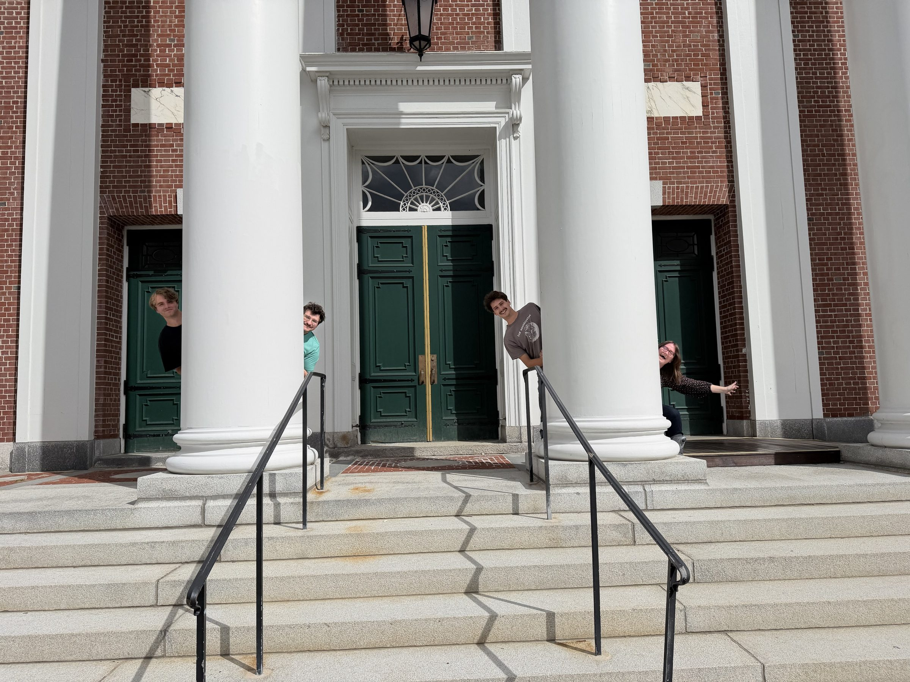

University of Vermont · Department of Chemistry
The Dorn Lab
Organic methodology development and synthesis toward boron- and nitrogen-containing molecules.
Group photo



Group news
Latest from the lab
Loading news…